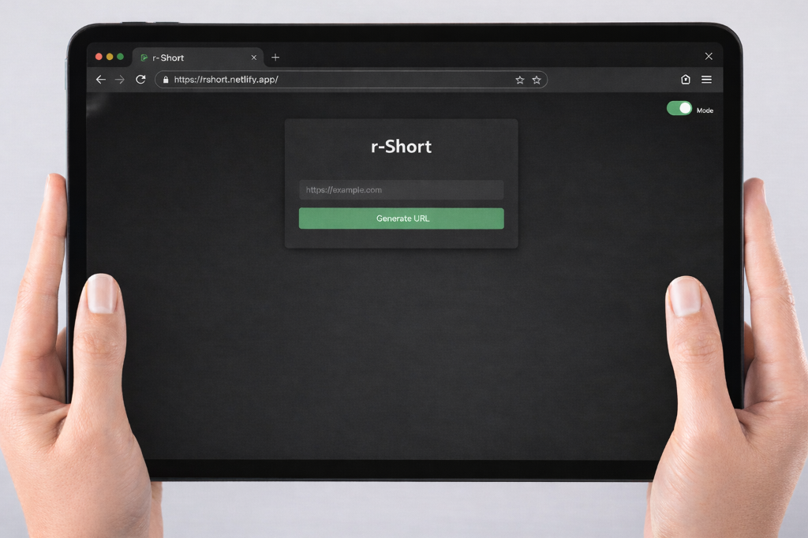

A fast, minimalist URL shortener built with JavaScript, HTML5, and CSS3.

URL Shortener transforms long, unwieldy URLs into short, shareable links. It's designed to be fast, minimalist, and purely functional — an essential utility for anyone who shares links regularly.
The application takes a long URL as input and generates a condensed version that redirects to the original destination. No accounts, no tracking, no fluff.
The entire application is built with vanilla frontend technologies — no frameworks, no libraries. This keeps the bundle size minimal and ensures lightning-fast load times.
POST /shorten — Create a shortened URL
{
"url": "https://example.com/very/long/url"
}
Response:
{
"short_url": "https://rshort.netlify.app/abc123",
"original_url": "https://example.com/very/long/url"
}